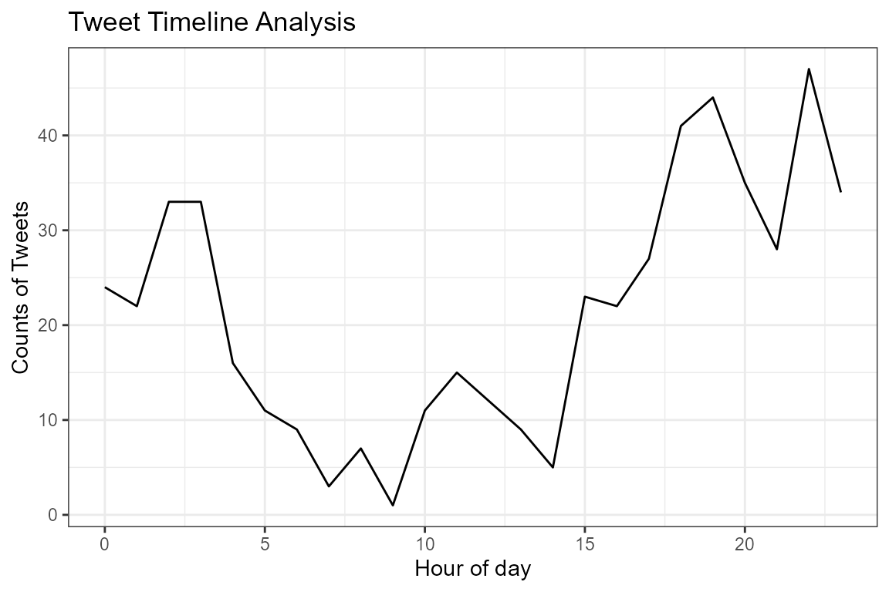
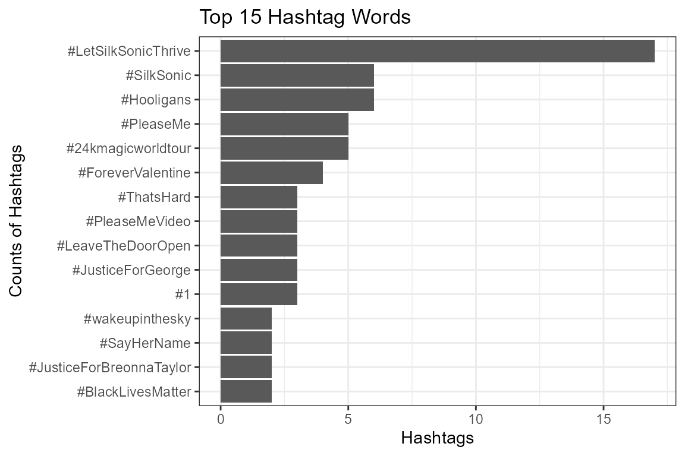
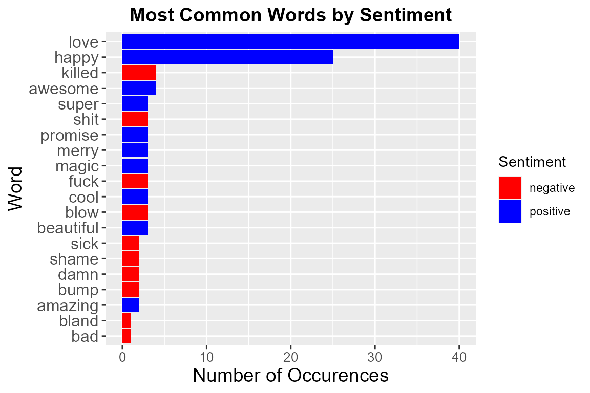

tweetr is a R package for text analysis and sentiment analysis on tweets. The package will allow you to extract tweets from Twitter, visualize user habit on tweet posting, and apply sentiment analysis to the data.
To use this package, follow the installation guide on README and install this package. Then, import the package.
library(tweetr)
#> Loading required package: tidyverse
#> -- Attaching packages --------------------------------------- tidyverse 1.3.0 --
#> v ggplot2 3.3.2 v purrr 0.3.4
#> v tibble 3.0.3 v dplyr 1.0.2
#> v tidyr 1.1.2 v stringr 1.4.0
#> v readr 1.3.1 v forcats 0.5.0
#> -- Conflicts ------------------------------------------ tidyverse_conflicts() --
#> x dplyr::filter() masks stats::filter()
#> x dplyr::lag() masks stats::lag()Download tweet data with get_tweets:
.Renviron file in the root directory.tweetr package, you have install the test data, which contains 500 tweets from @BrunoMars. You don’t have to create a credential to test the other functions in this package.
data <- get_tweets('@BrunoMars', n_tweets=100)
#> [1] "Using direct authentication"
data
#> # A tibble: 100 x 2
#> time tweet
#> <dttm> <chr>
#> 1 2021-03-16 03:13:07 Andy out here got me doing the most... back to my cave 🐉…
#> 2 2021-03-15 22:26:15 Just posted a photo https://t.co/EiWSLV6oqy
#> 3 2021-03-15 19:19:26 Grammys listen, I promised I wouldn’t be extra at the sh…
#> 4 2021-03-14 20:59:10 Catch these guys tonight on The Grammys!!!! #LetSilkSoni…
#> 5 2021-03-14 20:36:29 #LetSilkSonicThrive
#> 6 2021-03-10 01:55:17 aaaannnddd scene 🎬 https://t.co/jDgzVr4lId
#> 7 2021-03-10 01:47:47 Dear @RecordingAcad we humbly accept your invitation to …
#> 8 2021-03-10 01:32:43 Maybe for one night we can put our differences aside and…
#> 9 2021-03-09 21:01:58 Wait who tf you calling little? https://t.co/O4ByUELcnb
#> 10 2021-03-09 20:41:31 Brothers for life? But you’re really gonna break up the …
#> # … with 90 more rowsTimeline analysis with plot_timeline:
data <- tweetr::brunomars_tweet
plot_timeline(data, time)
plot_hashtags:
data <- tweetr::brunomars_tweet
plot_hashtags(data)
sentiment_analysis:
data <- tweetr::brunomars_tweet
sentiment <- sentiment_analysis(data)
#> Joining, by = "word"
#> Joining, by = "word"
sentiment
#> # A tibble: 126 x 3
#> word sentiment n
#> <chr> <chr> <int>
#> 1 love positive 40
#> 2 happy positive 25
#> 3 awesome positive 4
#> 4 killed negative 4
#> 5 beautiful positive 3
#> 6 blow negative 3
#> 7 cool positive 3
#> 8 fuck negative 3
#> 9 magic positive 3
#> 10 merry positive 3
#> # ... with 116 more rowsvisualize_sentiment:
data <- tweetr::brunomars_tweet
sentiment <- sentiment_analysis(data)
#> Joining, by = "word"
#> Joining, by = "word"
visualize_sentiments(sentiment)